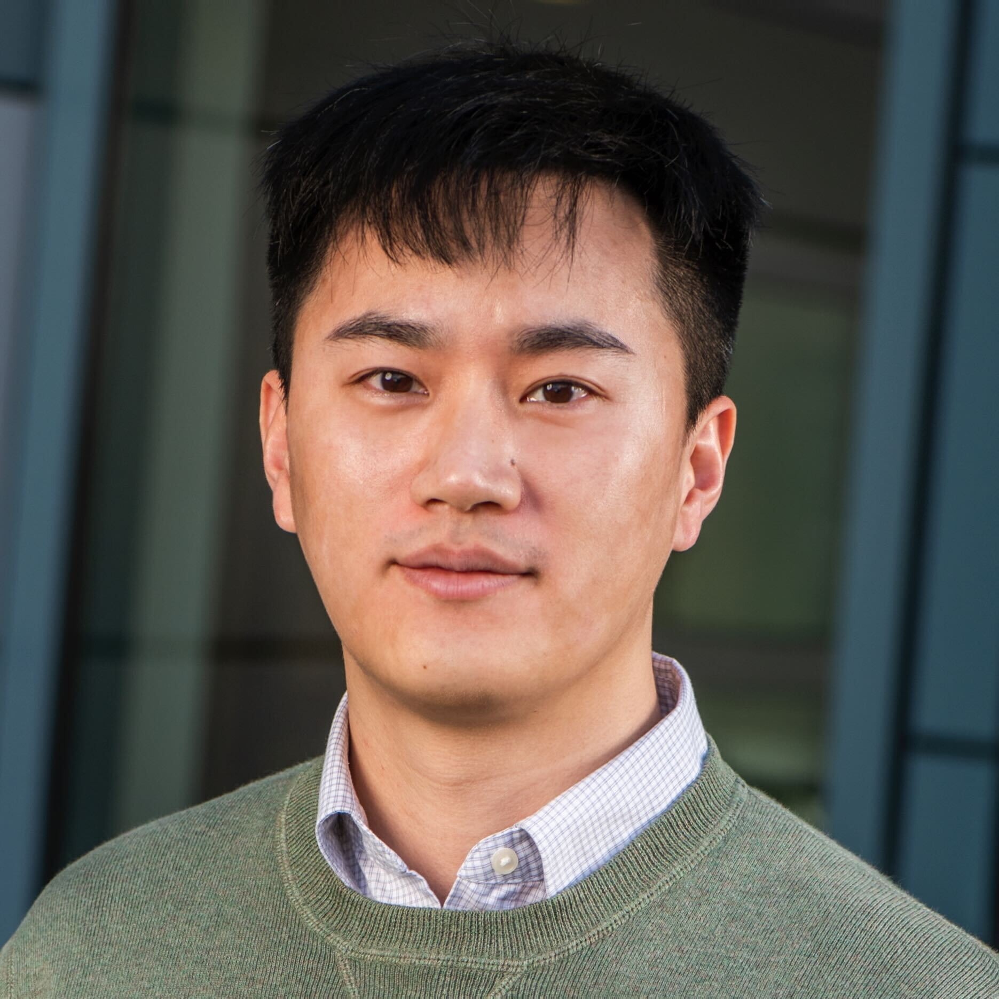

|
 |
I am a Postdoc Fellow in AI & Learning Systems Group at Lawrence Berkeley National Lab, where I am working with Prof. Michael Mahoney. I received my Ph.D. at Northeastern University in July 2022, where I worked with Prof. Hao Sun and Prof. Ryan Wang. I was also fortunate to collaborate with Prof. Jerome F. Hajjar, Prof. Yang Liu, and Prof. Jian-Xun Wang.
I am broadly interested in AI methods for scientific problems. I work on both the methodology and application sides of scientific machine learning. Specifically, my research focuses on soft- and hard-constrained machine learning, generative modeling, and large pretrained models, with applications spanning fluid dynamics, climate science, geophysics, earthquake engineering, etc.
More recently, I have been exploring weight-space analysis and its role in scientific machine learning, particularly through loss landscape analyses of constrained models and eigen-spectral analyses of large pretrained models. My ongoing projects aim to establish theoretical and computational foundations that connect these analyses to the generalization and transferability of scientific foundation models.
Email: pren AT lbl DOT gov
|